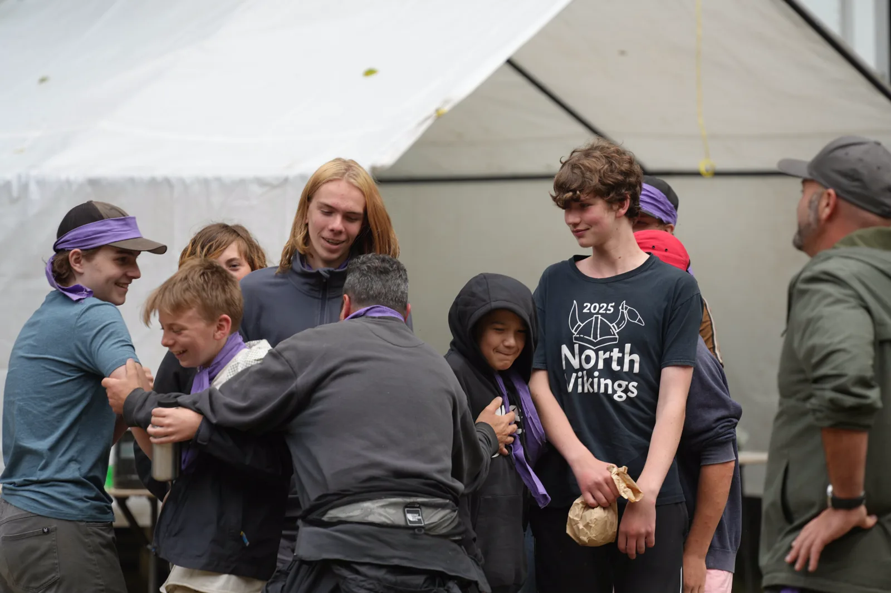

FAQ
The questions parents ask first. And the ones young men ask when their parents leave the room.
If yours is not here, email info@ymaw.com. A person on the production team reads it and replies.
The basics
When and where is the 2026 weekend?
Friday September 11 to Sunday September 13, 2026, at a wilderness site in the Squamish region of BC. Young men are picked up by bus Friday afternoon at stops in Burnaby, Langley and Squamish and returned to the same stops Sunday afternoon. There is a carpool from Vancouver Island. Exact stop locations and times are sent to registered families.
Who is it for?
Young men aged 12 to 17, of every background. No experience with camping or the outdoors is needed. The weekend is designed so that a young man who has never slept outside and one who has done it every summer both find their edge.
Is it a summer camp?
No. It is a rite of passage. There is plenty of fun in it, and Saturday afternoon is unapologetically summer camp, but the weekend is built on the shape of the hero's journey: separation, trial, return. It is run by men who take that seriously, a lot of whom were once the ones on the bus.
What does it cost, and what is included?
$320 per person, and everyone at the weekend pays the same: young men, sponsors and production men. It covers two nights and three days; transport from the pickup points; snacks Friday, three meals and snacks Saturday, and breakfast and lunch Sunday; camping accommodation in shelters the teams build; and the whole production team. A packing list comes with registration.
How do I pay?
On the registration form you can pay by card, or reserve the spot and send the total by e-transfer to info@ymaw.com with the names and your reference in the message. If the card option is not showing, card payments are temporarily off and e-transfer is the way. Nothing is charged until you choose to pay.
What if we can't afford $320?
Register anyway and tick the assistance box on the payment step. A man from the team will call you privately and work it out. No young man misses the weekend over money, and we would rather hear from you than not.
For the young man. Yes, you.
Do I have to talk in the circle?
No. The men go first, every time. You speak if you choose to and only about what you choose. Nobody is graded on it and nobody gets pushed. Some young men say nothing on Friday and plenty on Saturday. Both are fine.
What about my phone?
It goes in your bag for the weekend, along with everyone else's, including the men's. Friday night that feels like a big deal. By Saturday afternoon it matters a lot less. Your family has info@ymaw.com and the contact details that come with registration for anything urgent, and if there is something you need to know, a man will find you.
I've never camped. Will I look stupid?
Nobody has done this weekend before their first time, and the shelter you sleep in gets built by your team on Friday night, so you are not the only one figuring it out. The packing list tells you exactly what to bring. The men have seen plenty of first nights and they are on your side.
What if I don't know anyone?
Plenty of young men step on the bus knowing nobody. Teams are formed Friday night out of people who were strangers an hour before, and by Saturday lunch that team is yours. Knowing nobody on Friday is a fine way to arrive.
Can I bring a friend?
Yes. Each of you registers. The men form the teams on Friday night, so you may not end up on the same one, and that turns out to be part of it. You will have plenty to compare on the bus home.
Is it religious?
No. YMAW is non-denominational. There is a ceremony on Sunday and there is real meaning in it, but nobody asks you to believe anything. What the weekend is intentional about is character: responsibility, integrity, community and self-discovery.
Will what I say get back to my parents?
Not from us. What is said in the circle stays in the circle, and that rule binds the men harder than it binds you. Your parents will hear what you choose to tell them. The one exception is the same as anywhere: if a man believes you are in danger, he will act to keep you safe, and he will tell you he is doing it.
Is it actually hard?
Yes. The hike in is in the dark with your gear on your back. The Quests are built so nobody finishes one alone. Saturday night goes deeper than most weekends do. And Sunday you get to run at a field of grown men in a ball game with almost no rules. You come home tired, dirty and carrying yourself differently. That is the point.
Safety and supervision
Who is supervising my son?
A volunteer production team of men, every one of them screened, who complete a Friday-morning training before the young men arrive. Each young man has Shadow Watchers who walk alongside him all weekend. The buddy system applies to everyone: no man is ever alone with a young man, and no young man is ever alone.
What are the rules on site?
The YMAW standards: buddy system at all times; no drugs, alcohol or tobacco; honour the site; young men do not engage with adults who are not part of the YMAW team; confidentiality; be on time and ready; look after your own well-being and each other; and anyone can call "safety", at which point everything stops. The young men add their own standards on Friday night and live by them.
What about medical conditions, allergies and medication?
Tell us on the registration form. Medical notes are kept private and used only to look after him. Note allergies and dietary needs there too so the kitchen can plan for them. If your son carries medication, pack it labelled and tell the team at the bus stop.
Is there confidentiality?
Yes, and it protects your son. Everything seen and heard in the circle stays there. He can tell you what he learned; he will not tell you another young man's story, and no man will tell his. If there is ever something you need to know about your own son, a manager will call you.
Daily life
Where does he sleep?
Outside, in a shelter his team builds on Friday night. That is by design: building a camp together is the first job a new team does and the first place leadership shows. The packing list covers the sleeping gear he needs for BC in September.
What does he eat?
Snacks on Friday evening after the hike in; breakfast, lunch, dinner and snacks on Saturday, with lunch served out at the Quest Stations; breakfast and a bag lunch on Sunday. Real food cooked by the kitchen team on site.
What if he doesn't want to go?
Plenty of them don't, on Friday. A lot of what the weekend does happens in the space between not wanting to and having done it. Tell him honestly what it is: a bus, a hike in the dark, a team, a camp he builds himself, a day of challenges, a night that goes deeper, and a game on Sunday where the young men get to take on the men. Show him the straight-talk section on The Weekend. Then let the men take it from there.
Can I come too?
Yes, in one of two ways. A sponsor (father, uncle, guardian, family friend) registers alongside the young men he is bringing, pays the same $320, and comes as a production man. Or join the production team without a young man of your own. Either way you complete the screening and the Friday training, and either way, if your son is there, you trust the team to hold him. This is his time.
Practical
What if our plans change after we register?
Email info@ymaw.com with your reference code as early as you can. Every case is handled by a person on the team. If you reserved with e-transfer and have not yet paid, nothing has been charged.
Will my son's photo be used?
Only if you say so. The registration form includes a media release: photos and video from the weekend may be used by YMAW on its website, on social media and in print. A young man's name is never published without separate permission. Granting the release is voluntary, but every registrant chooses yes or no and signs. You can withdraw it at any time by emailing info@ymaw.com.
How long has this been going?
Since 1990. The weekend is run by the Young Men's Adventure Weekend Society of BC, a volunteer society of men, many of whom came to their first weekend as young men themselves.
How do I reach you?
info@ymaw.com. We are also on Instagram and Facebook.
Ready when you are.
Registration takes about five minutes. Nothing is charged until you choose to pay.